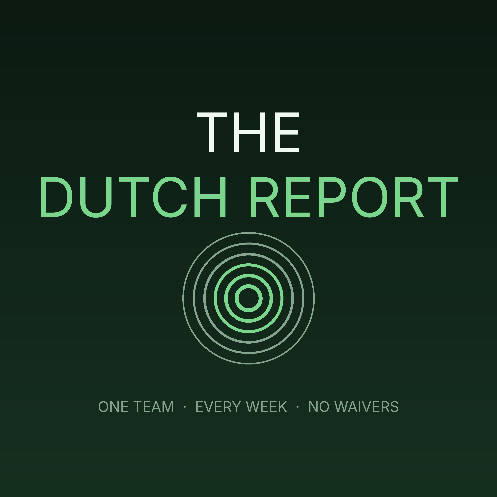

The Dutch Report
The Dutch Report
A weekly Tuesday show for one fantasy manager: the week that just happened on his roster, this week's matchup and the lineup it demands, every riser on the add board with a verdict, and what the rest of the league did.
Subscribe
Paste this into Overcast, Pocket Casts, or any podcast app:
https://adil1248.github.io/bmojb2vw8gjzyidkfv/feed.xml
Episodes
- 2026-09-15 — Week 2 — redo — 2026-09-15 (11 min)
- 2026-09-15 — Week 1 — 2026-09-15 (7 min)
- 2026-09-08 — Week 1 — 2026-09-08 (9 min)